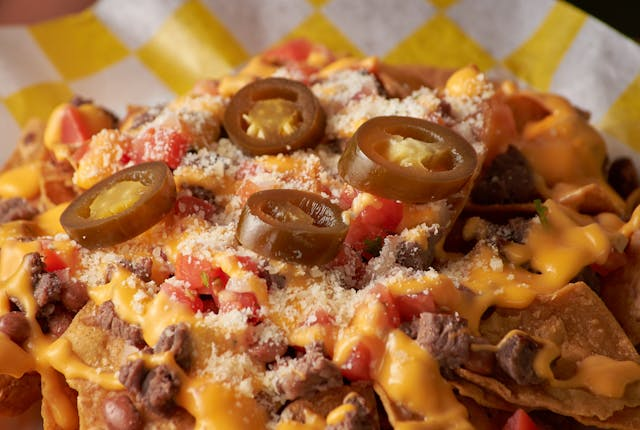

Basic Nachos

A dish of nachos. Alejandro Aznar/Pexels
Description
A quick and easy to make nacho recipe that is best for social gatherings or when you simply want to relax and enjoy a nice snack.
Minimal preparation time is required for this recipe, making it a good option for those in a time crunch.
Ingredients
- 1 or 2 party size bags of nacho chips
- 1 pound of ground beef
- 1 packet of taco seasoning
- 1 jar of pickled jalapeno pepper slices
- 1 family sized bag of shredded cheese
- 1 jar of nacho cheese sauce
Steps
- Get a pan and put it on medium to low heat on your stove
- Unpack the ground beef, put it into the pan and begin mashing it up
- Let the beef cook until browned
- Drain excess fat from the pan, add 1 cup of water to the pan along with the taco seasoning
- Stir the seasoning into the mixture, let simmer until water sufficiently evaporates
- Place nacho chips on a plate
- Place taco meat on the chips along with any toppings you wish